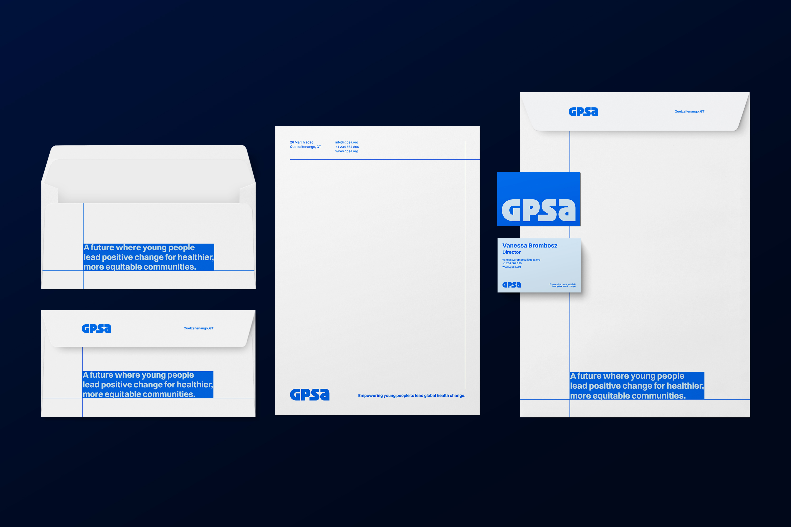
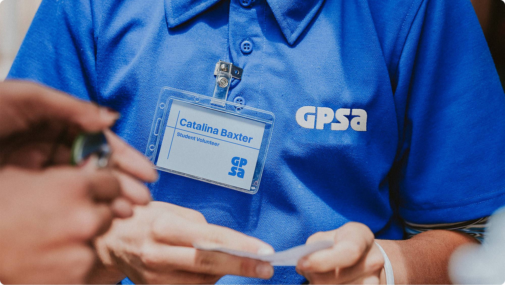
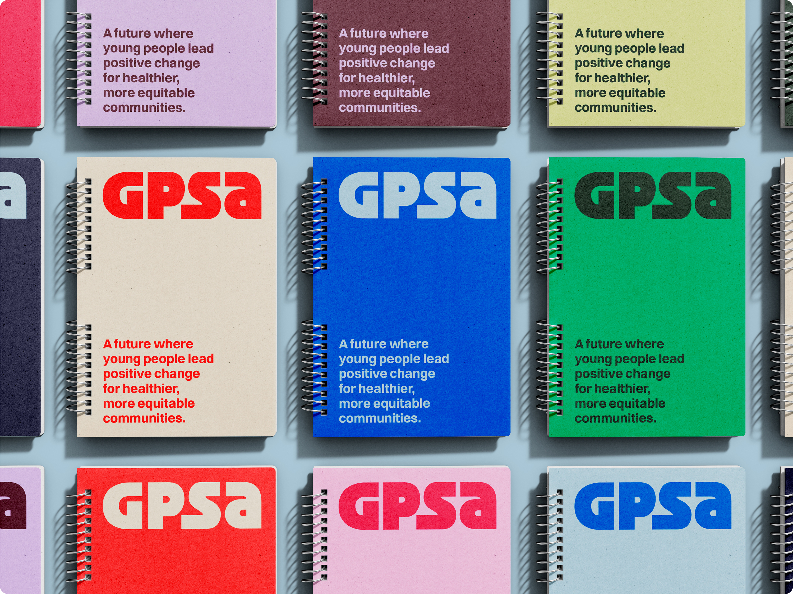
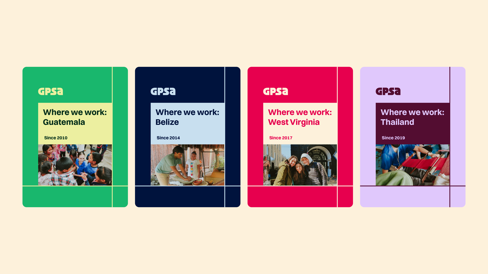
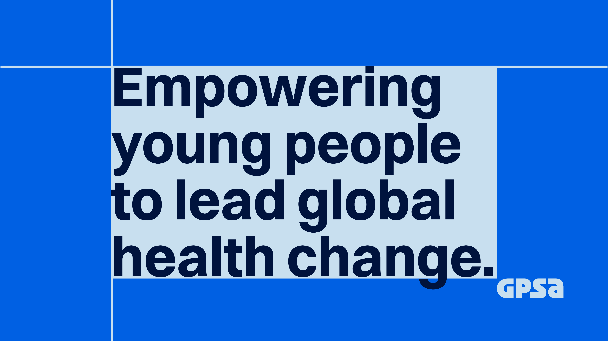
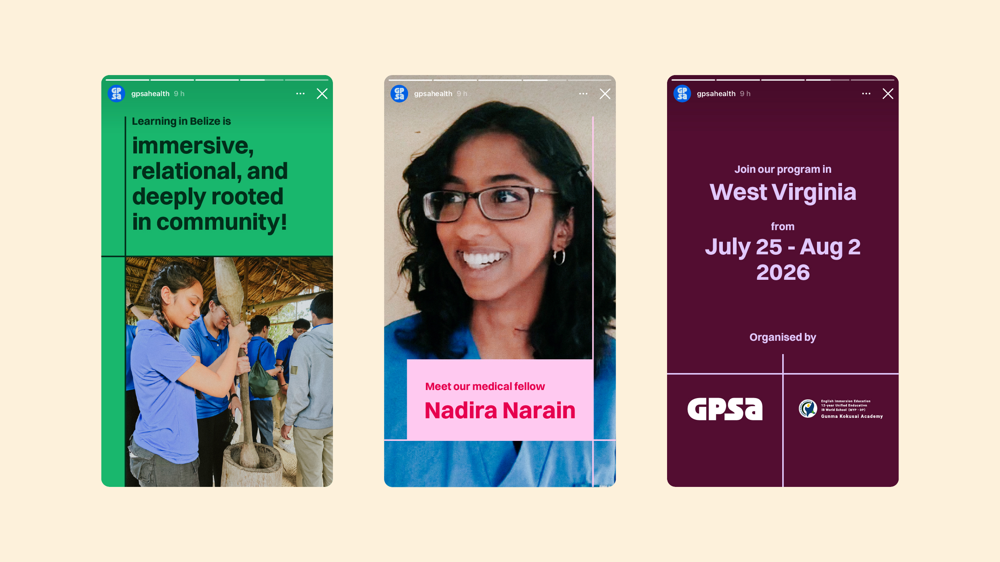
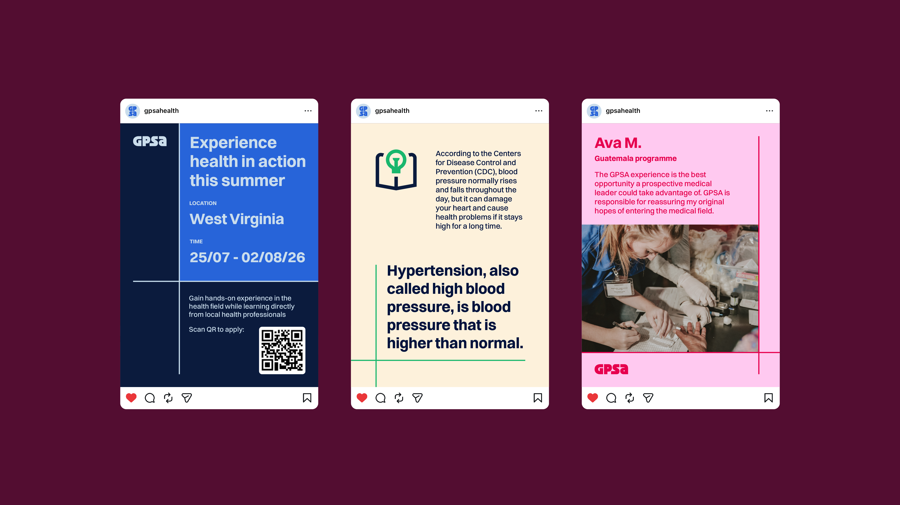
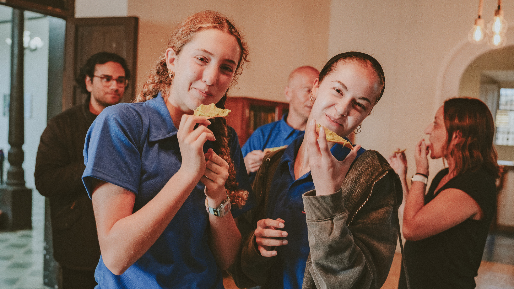
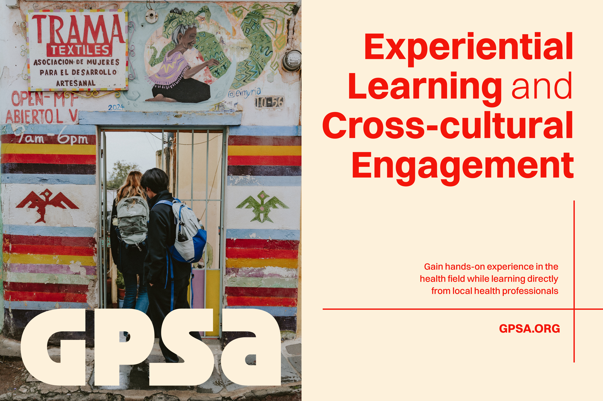

GPSA
Making a health educational travel experience go bold
Client
Global Public Service Academies
Industry
Civic & Social Organisations
Discipline
Brand Identity
Year
2026
Founded in 2010, Global Public Service Academies (GPSA) was created with an understanding that young people can make a difference in the world. Their mission is to empower high school students to lead global health change through hands-on experiential learning programs and cross-cultural engagement. They collaborate with local authorities to promote health equity in underserved communities in Guatemala, Belize, West Virginia, and Thailand.
After 16 years in operation, GPSA recognised a need to be more noticeable in their field and to connect better with their target audience. The chosen art direction is a bold and brave imagery, presenting the young spirit and enthusiasm to contribute to society and step out of comfort zones.
Taking on this brief, I redesigned their brand identity with specific assessment keywords to guide the creative process: “out of comfort zones”, “adventurous”, “explorative”, “confident”, “quirky”, “unfiltered”.
It started with a visual metaphor that could capture a link to the brand. GPSA is an educational travel social service, so travelling from place to place, getting local experiences in four countries are what's on my mind. Travel, global, four locations on the world map, I came to think of the system of longitude and latitude lines. These imaginary horizontal and vertical lines in geography serve as a universal address system, providing a set of coordinates that can direct you to any location on Earth. A simpler way to refer to this inspiration is the x-axis and y-axis. Any point that moves around these axes would have its unique x and y values. Hence, this visual gives an expression of flexible moving around, not being fixed to a specific point.
The primary logo mark is a customised font that is bold and quirky enough to make a first impression. I explored another lockup and formed a negative space in the centre by the square angles from the letters that refer to the x and y axes. This allows me to experiment with the layout, using straight lines, rectangular shapes and typography.
Inheriting their royal blue as one of the requirements, the colour palette is added with more hues and shades. As the brand is explorative and energetic, the saturation is pretty high to catch attention in different contexts. For example, when it comes to formal content, the royal blue and dark blue, as well as dark purple, dark green, can be used, and when it comes to more casual and informal content, pastel colours can be a good choice. Or, for impactful and empowering content, red can be considered to highlight the key message.
Switzer is used as the brand typeface with 9 weights and 18 styles in total, allowing a versatile expression of messages. This font family has a variable technology, allowing further flexibility in typographic expressions.
Lifestyle photography helps focus on people and the shared moments between them. This style is suitable for capturing caring actions, active support, and new experiences that GPSA brings to their volunteers and local communities.








